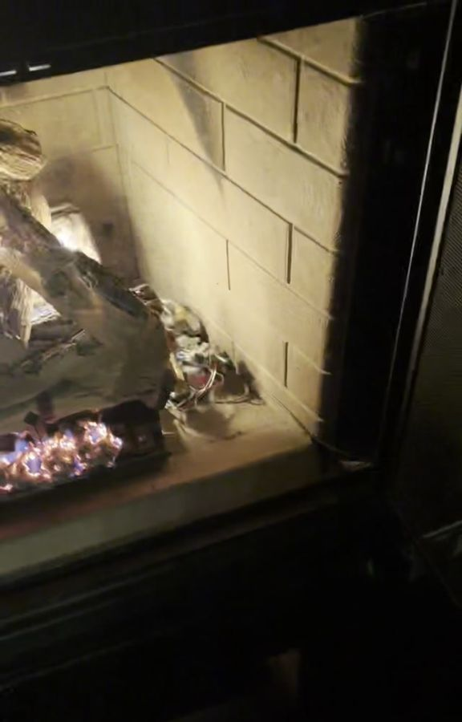
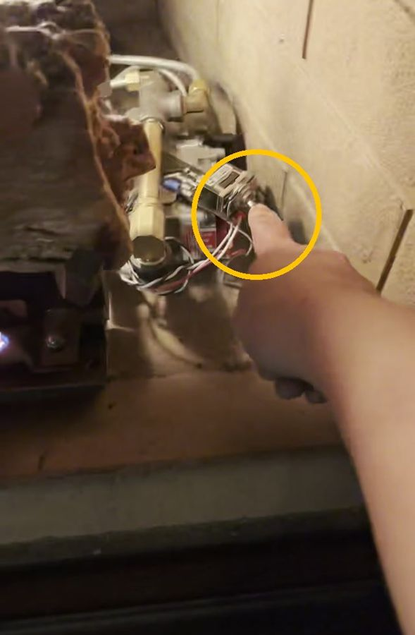
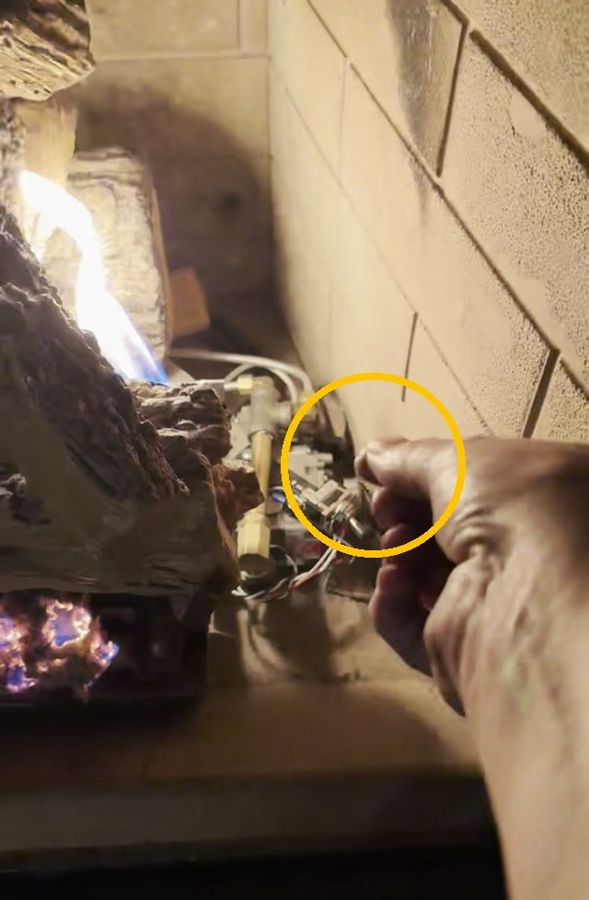
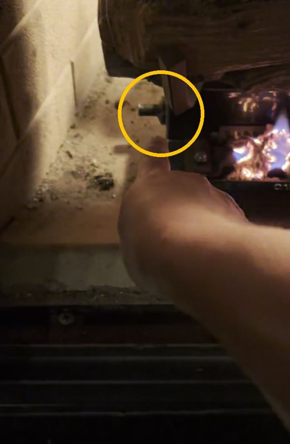
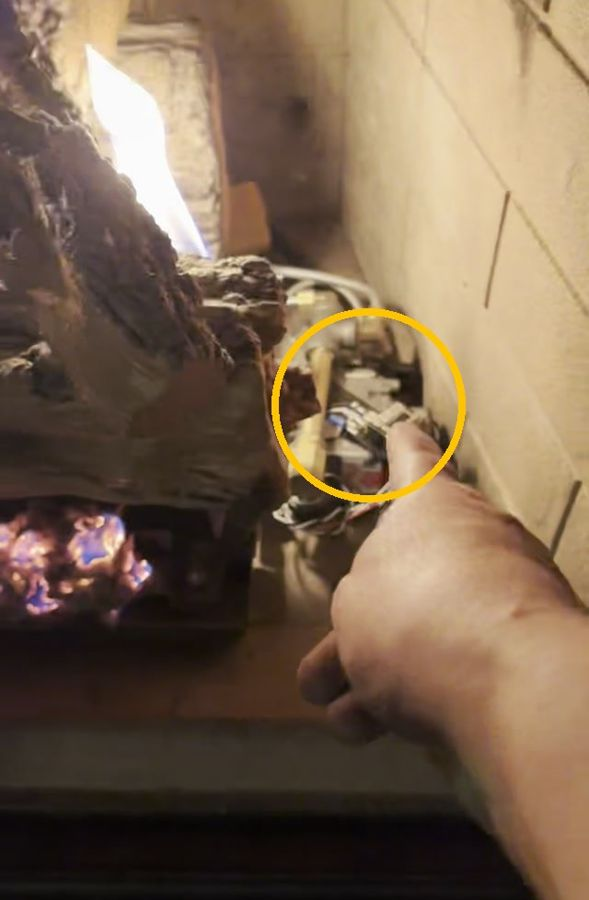
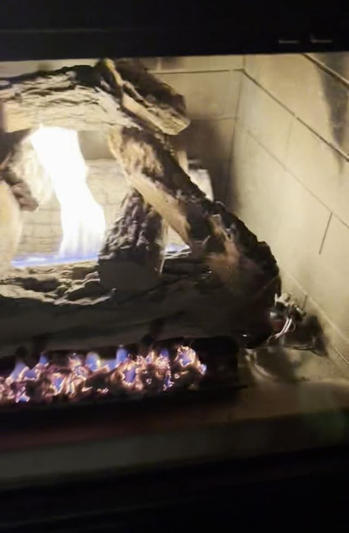

Signature Stay — How to Light the Fireplace Pilot
For the gas-log fireplace at Signature Stay, Gatlinburg. You'll use two controls: the black gas knob on the right and the igniter button on the left. Takes about 2 minutes.
1Turn the timer on
Before anything else, turn on the fireplace timer. The fireplace won't light without it.
2Open the front screen
With the fireplace off and cool, open both sides of the front mesh screen so you can reach the left and right sides inside.

3Make sure the switch is OFF
On the right side, behind the logs against the wall, check that the switch on the gas valve (circled) is OFF. It should always stay off. If it's on when you turn the knob to ON, flames can shoot toward your face. Careful: this area gets hot.

4Turn the black knob to PILOT and hold it in
The black knob is on the same valve.
- If it isn't on OFF: push the knob in slightly and turn it clockwise (to the right) to OFF.
- From OFF: turn the knob counterclockwise (to the left) to PILOT, then push it in all the way and keep holding it so gas flows to the pilot. Don't let go.

5Press the igniter on the left side
While you're still holding the knob in, reach to the left side under the logs and push in the black igniter button (circled). Press until a flame appears at the pilot.

6Hold, release, then turn to ON
Once the pilot is lit, keep holding the knob in for 15 seconds, then let go. Then push the knob in and turn it counterclockwise to ON in one motion.

7Close the screen
Close the screen. From now on, turn the fireplace on with the timer. Don't touch the valve again.

Still not lighting?
Turn the knob to OFF, wait 5 minutes, and try again. If it won't stay lit, message us and we'll help.